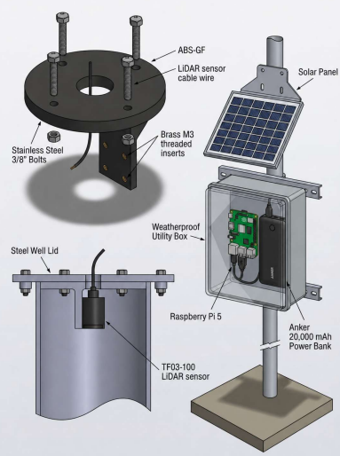
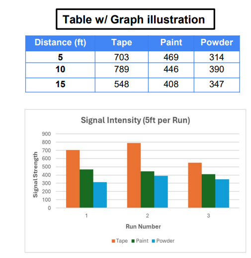
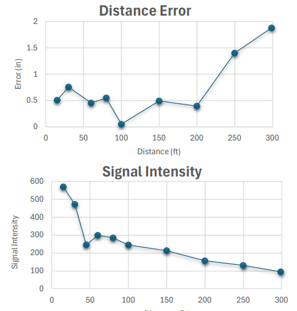
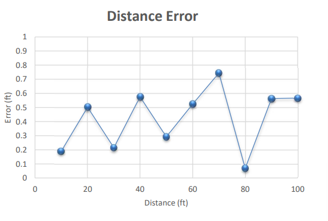
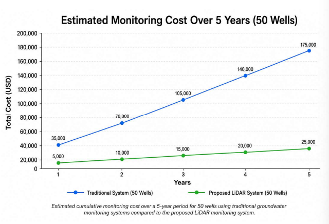

Tools: Benewake TF03-100 LiDAR · Raspberry Pi · Time-of-Flight sensing · solar power system · SolidWorks · FDM 3D printing (ABS-GF, PETG)
A low-cost, solar-powered LiDAR system for automated groundwater-level monitoring, built for Woodpecker Microsystems and the Merced Irrigation-Urban Groundwater Sustainability Agency (MIUGSA). As Project Lead of the four-person capstone team, I guided the system from concept through three phases of testing to field validation.

The Merced subbasin is critically overdrafted and falls under California's SGMA mandate to actively manage groundwater. The existing manual method relies on pressure transducers costing $3,000–$5,000 per well, read by hand from well to well — expensive, labor-intensive, and leaving inconsistent, sparse data across the basin. The client needed an automated, low-cost alternative that could scale across many wells.
A Benewake TF03-100 LiDAR sensor mounts at the top of a 16-inch monitoring well and fires a 905 nm pulsed infrared laser downward onto a PETG floating disk coated with retroreflective tape at the water surface. The reflected signal returns to the sensor, and distance is computed by Time-of-Flight. A Raspberry Pi logs measurements three times daily, powered indefinitely off-grid by a solar-charged power bank — no moving parts and minimal modification to existing wells.
The system was validated in three phases, each isolating a different variable — from picking the reflective material, to scaling distance to the limit, to a simulated real-well run.
Compared retroreflective tape, paint, and powder for signal return in a controlled dark environment. Tape returned roughly 135% stronger signal than the alternatives and outperformed them at every distance, so it was selected for the floating disk.

Scaled the reflective disc from 15 to 300 ft — the farthest range tested — to check consistency and system compatibility well beyond real well depths. Signal stayed within valid operating range the whole way, and distance error held at or below 0.55" across the 60–200 ft band that matches Central Valley wells, rising toward ~1.9" only at the extreme 300 ft edge — graceful degradation well past the operational envelope.

Simulated a monitor well using 4" PVC pipe, tested at 10 ft increments to 100 ft — a tighter, more restrictive geometry than a real 16-inch well. Mean error was 0.42 ft with every reading under the 1 ft design threshold (best run 0.069 ft), confirming the system operational for real well testing.

At roughly $454 per well versus $3,000–$5,000 for a traditional pressure-transducer setup, the system cuts per-well cost by about 85–90%. Over a five-year horizon across 50 wells, the cost gap widens dramatically, with only ~$50/yr maintenance — making basin-wide, SGMA-compliant monitoring financially viable at a scale the manual method can't reach.

The system met its accuracy target, validated to 100 ft depth, and proved scalable and low-cost for large well networks — delivering the client a working, field-validated prototype that replaces a $3,000–$5,000 manual setup at roughly $454 per well. Refinement of the system is ongoing.